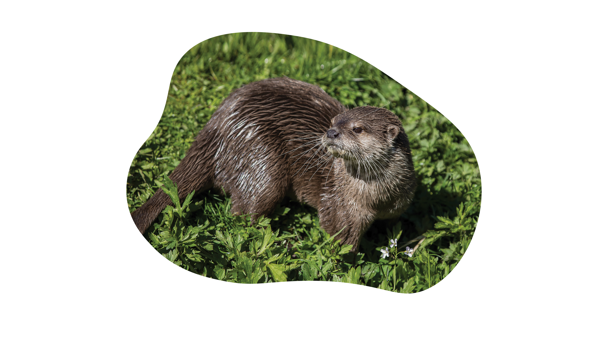

De kleinklauwotter, dwergotter of sero (Aonyx cinereus, voorheen Amblonyx cinereus) is de kleinste otter ter wereld. Het dier komt voor in grote delen van Zuidoost-Azië en enkele gebieden in India, Nepal en het zuiden en zuidoosten van China. De internationale beschermingsstatus is 'kwetsbaar'. In gevangenschap is de kleinklauwotter in veel dierentuinen aanwezig.
Het dier is tot 55 cm lang, exclusief de 30 cm lange staart, het gewicht is zo'n 4 - 5 kg. Dwergotters hebben een afgeplat hoofd en een korte, dikke nek; de ogen bevinden zich aan de voorkant van het hoofd. De oren zijn klein en rond, een klep-achtige structuur maakt sluiting mogelijk tijdens het zwemmen onder water. Gevoelige snorharen op de snuit nemen aanrakingen en trillingen onder water waar, ze zijn belangrijk bij het opsporen van prooien. Tussen de tenen bevinden zich korte zwemvliezen. De vacht is op de rugzijde bruin, op de buikzijde lichter. Onder aan de snuit en op keel en borst bevinden zich witte velden.
Dwergotters leven samen in groepen van zo'n twaalf dieren, die met elkaar communiceren door middel van geluiden en geuren. Territoria worden gemarkeerd met klierafscheidingen, urine en uitwerpselen. Tussen partners bestaan hechte relaties. Een worp bestaat meestal uit twee tot zes jongen, die door beide ouders in een hol worden verzorgd. De kleinklauwotter leeft van weekdieren, mosselen, krabben en andere kleine waterdiertjes, maar ook insecten, vis, kleine zoogdieren en vogeltjes.
De soort komt enkel in het wild voor in Azië, meer bepaald India, China en in Zuidoost-Aziatische landen zoals Indonesië en de Filipijnen, te weten in mangroven en allerlei zoetwatergebieden, zoals moerassen, rivieren, meren en overstroomde rijstvelden.